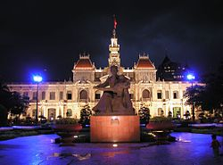

Là trung tâm kinh tế, chính trị và văn hóa lớn nhất ở miền Nam Việt Nam. Sài Gòn – TP.HCM cũng là một trung tâm du lịch lớn, với các di tích lịch sử và bảo tàng ghi lại dấu ấn thời chiến
 tranh chống Pháp và Mỹ. Tiêu biểu là hệ thống 11 bảo tàng trong đó nổi tiếng nhất là Bảo tàng chứng tích chiến tranh. Bên cạnh đó, các công trình kiến trúc thời thuộc địa cũng làm mãn nhãn du khách khi du lịch Sài Gòn, như Trụ sở Ủy Ban Nhân Dân Thành phố, Nhà hát lớn, Bưu điện trung tâm, Bến Nhà Rồng, Chợ Bến Thành và Dinh Độc Lập. Gần đây, các công trình mới như Diamond Plaza, Bitexco Financial Tower, Saigon Trade Center cũng làm đẹp thêm cảnh quan khu trung tâm thành phố. Ở vùng ngoại vi thành phố cũng có những điểm tham quan nổi bật như Địa đạo Củ Chi, Rừng ngập mặn Cần Giờ và Vườn Cò Thủ Đức.
Cùng iVIVU.com đặt  phòng khách sạn khi du lịch Sài Gòn: Danh sách khách sạn Sài Gòn.
phòng khách sạn khi du lịch Sài Gòn: Danh sách khách sạn Sài Gòn.
VIVU.com giới thiệu Cẩm nang du lịch Sài Gòn đầy đủ và súc tích nhất, giới thiệu các điểm đến và món ăn ngon khi bạn có dịp du lịch tới “Hòn ngọc Viễn Đông”.
Không cần phải đến Thái Lan xa xôi mới có thể tham dự lễ hội té nước Songkran nổi tiếng. Tại Sài Gòn vào ngày 16/4 tới đây, bạn chỉ cần đến Nhà văn hóa Thanh niên là có thể hòa…